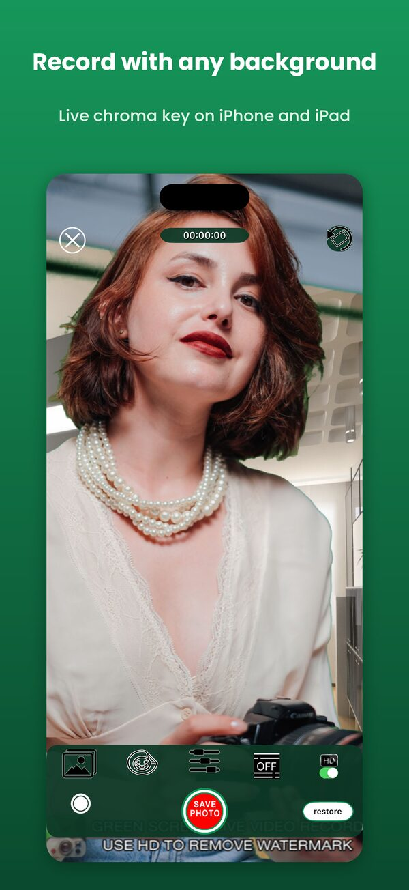
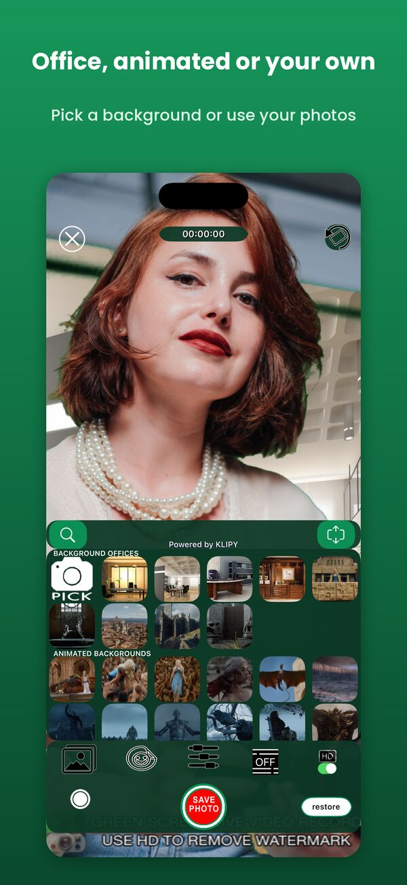
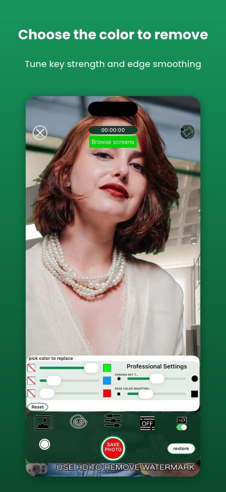
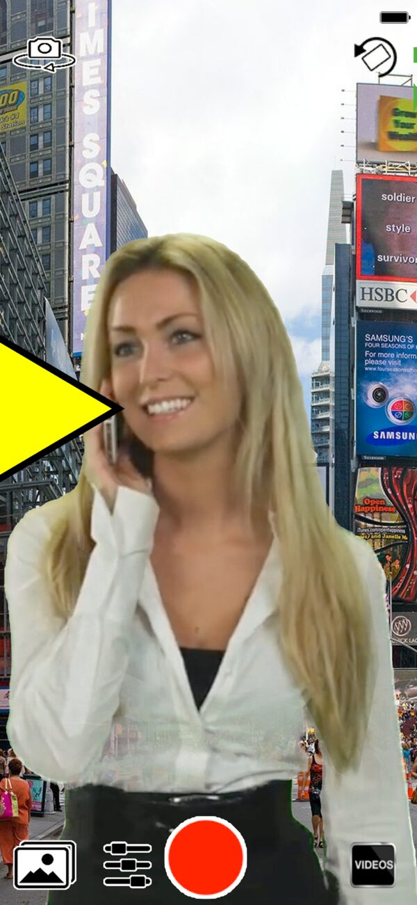

Record a green screen video in 5 steps
- Set up the backdrop. Hang a green or blue cloth, paper or painted wall behind you. Pull it tight: wrinkles create shadows that are harder to key.
- Light it evenly. Light the backdrop and yourself separately. Two soft lights on the backdrop and one in front of you avoid shadows and green spill.
- Step forward. Stand 1-2 m (3-6 ft) in front of the backdrop and avoid wearing green or shiny clothes.
- Pick a background and tap the color. Open Green Screen Live, choose a photo, video, office or animated background, then tap the backdrop to set the key color and adjust strength and edge smoothing.
- Record and share. Press record. The composited video is saved to Photos, ready for TikTok, Instagram Reels, YouTube Shorts or a lesson.
Who uses a green screen app
- Creators: TikTok and Reels reactions, meme formats and travel-style shots without leaving home.
- YouTubers: a consistent studio look for talking-head videos.
- Real estate and business: present in front of a listing, your office or a product slide.
- Teachers and students: news reports, weather segments and history projects; schools buy it in volume through Apple School Manager.
Green vs blue screen
Use green by default: phone cameras capture more detail in the green channel, so edges come out cleaner. Use blue when your subject wears green or has green objects, or for a night scene where blue spill looks more natural.
Tips for clean edges
- Keep the backdrop brighter than the subject, but not blown out.
- Lock exposure and avoid auto white balance shifts by keeping lighting constant.
- Fine hair and motion blur key better with more light and a higher frame rate.
- If you do not have a backdrop, any evenly lit plain wall in a single color can work: tap that color to remove it.
FAQ
Do I need a real green screen?
A green or blue backdrop gives the cleanest result, but any evenly lit plain wall in one color can be keyed by tapping that color in the app.
Can I use my own videos as the background?
Yes. Pick any photo or video from your library, or use the built-in office, animated and studio backgrounds.
Does it work on iPad and Mac?
Yes. Green Screen Live runs on iPhone and iPad, and on Macs with Apple silicon.
Is it free?
You can download it free and try it. Optional paid plans unlock extra backgrounds and features.
Green Screen Live Video Record — live chroma key with any background, on iPhone, iPad and Mac.